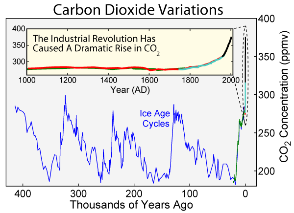
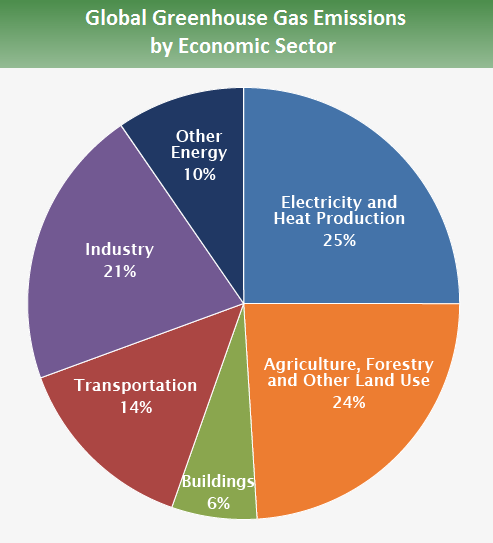
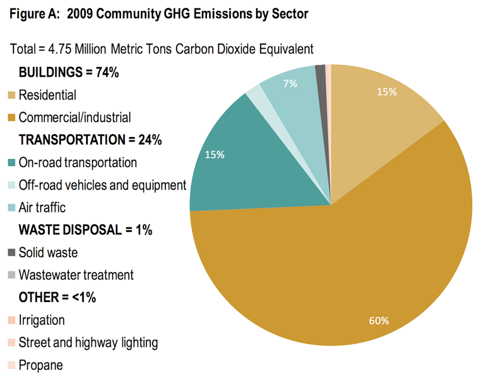

 Carbon Dioxide is the compound with the highest global-warming-pontential in our atmosphere. While many other greenhouse gasses are much more volatile per unit weight, the sheer magnitude of CO2 in the atmosphere is enough to far outweigh them all. Based on data taken from the Greenland Ice Sheets, we can see that atmospheric CO2 concentrations have fluctuated with natural climate temperature shifts. However, since the industrial revolution, atmospheric CO2 levels have skyrocketed, far beyond the the planet's apparant capacity for absorption.
 The largest producing sectors of CO2 and other greenhouse gasses are: electricity and heat production; agriculture, forestry, and land use; industry, and transportation. The majority of global greenhouse emission impact, then rests on the shoulders of individuals. Our reliance on non-renewable energy sources to power and heat our homes comes first, but is followed closely by our consumption habits related to food and textile choices. Industry and transportation-related emissions rests largely on the shoulders of large corporations, so they're indirectly pushed by the consumer.
\ In Salt Lake County, our largest producing sector is, by far, the commercial/industrial sector. Unsurprisingly, the vast majority of this weight is created by refineries, to the extent that it's hardly worth considering textile facilities or even the local mining industry. Compounding the effect these refineries produce is the "lake effect". Due to our geological landscape, heavy particulate matter in the atmosphere tends to be trapped in on all sides by higher elevation landscapes. It's no surprise, then, that Salt Lake City often racks up the worst air quality in the nation.